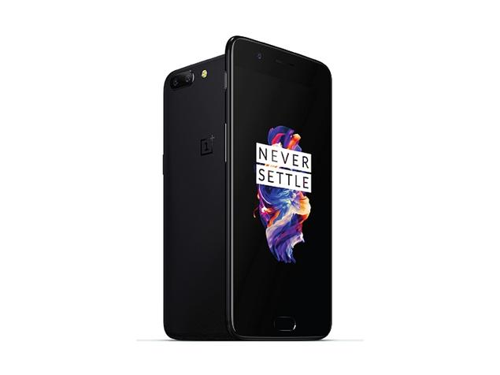

OnePlus 5 smartphone was launched in June 2017. The phone comes with a 5.50-inch touchscreen display with a resolution of 1080 pixels by 1920 pixels. The OnePlus 5 is powered by 1.9GHz octa-core Qualcomm Snapdragon 835 processor and it comes with 6GB of RAM. The phone packs 64GB of internal storage cannot be expanded. As far as the cameras are concerned, the OnePlus 5 packs a 20-megapixel primary camera on the rear and a 16-megapixel front shooter for selfies. The OnePlus 5 runs Android 7.1.1 and is powered by a 3300mAh non removable battery. It measures 154.20 x 74.10 x 7.25 (height x width x thickness) and weigh 153.00 grams.
